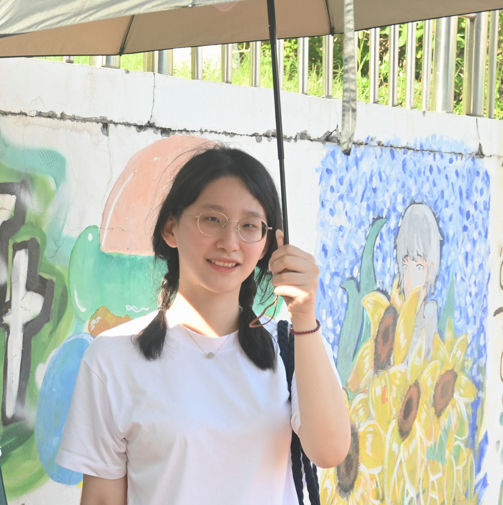

I am a Ph.D. student in Linguistics at City University of Hong Kong , under the supervision of Aini Li .
My research interests lie at the interface of phonetics and sociolinguistics. I am particularly interested in individual differences in speech perception, production, and processing. Another focus of my work is the multidimensional cues to lexical tones. Much of my research examines varieties of Chinese. I am especially interested in Changsha-accented Mandarin, locally known as “Changsha Plastic Mandarin”.